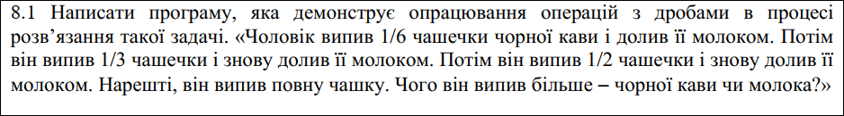
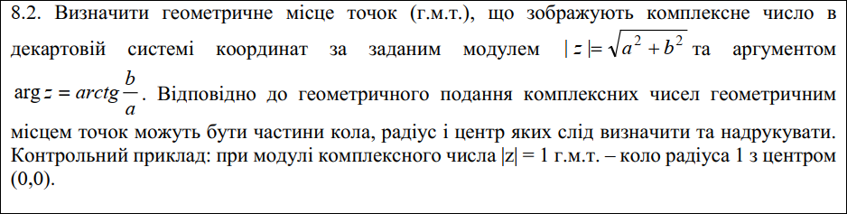
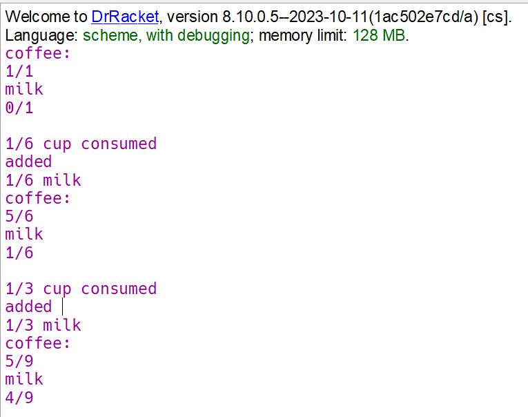
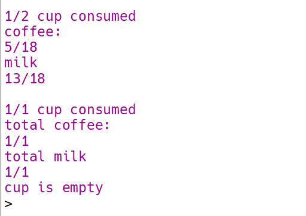
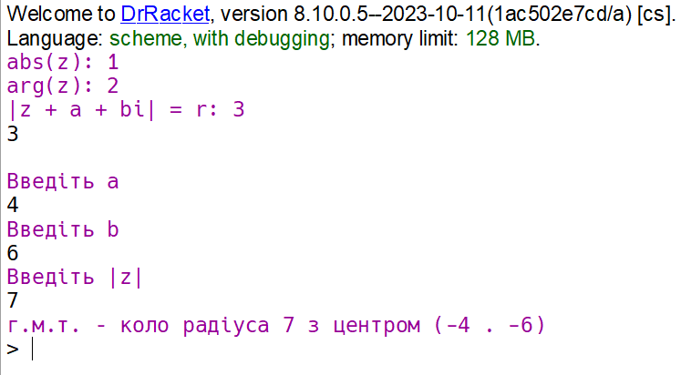

Функціональне програмування
Факультет інформаційних технологій
Кафедра програмних систем та технологій
Лабораторна робота 5
Обробка раціональних та комплексних чисел мовами функціонального програмування
Примачук Максим Григорович
Група: ІПЗ-44мс
Викладач: Ніколаєнко А.Ю.
2023
Мета
Опанувати технологію абстракції даних в мовах функціонального програмування. Реалізувати програму обробки раціональних та комплексних чисел мовами функціонального програмування, представивши ці числа конструкціями типу «пара»
Варіант 8
 Хід роботи
Завдання 1
Код
Посилання
#lang scheme
(define (cup coffee milk)
(begin
(display "coffee: ")
(print-rational coffee)
(newline)
(display "milk ")
(print-rational milk)
(newline)))
(define (drink coffee milk amount milk-acc)
(define (stats)
(if (equal-rational? amount (make-rational 1 1))
(begin
(print-rational amount)
(display " cup consumed")
(newline)
(display "total coffee: ")
(print-rational (make-rational 1 1))
(newline)
(display "total milk ")
(print-rational milk-acc)
(newline))
(begin
(print-rational amount)
(display " cup consumed")
(newline)
(display "added ")
(print-rational amount)
(display " milk")
(newline)))
)
(if (equal-rational? coffee (make-rational 0 1))
(display "cup is empty")
(begin
(cup coffee milk)
(cond
((equal-rational? milk (make-rational 0 1))
(begin
(stats)
(drink (sub-rational coffee amount) (add-rational milk amount) (add-rational amount (make-rational 1 6)) (add-rational milk-acc amount))))
((equal-rational? amount (make-rational 1 2))
(begin
(print-rational amount)
(display " cup consumed")
(newline)
(drink (sub-rational coffee (mul-rational coffee amount)) (add-rational (sub-rational milk (mul-rational milk amount)) amount) (add-rational amount (make-rational 1 2)) (add-rational milk-acc amount))))
(else
(begin
(stats)
(drink (sub-rational coffee (mul-rational coffee amount)) (add-rational (sub-rational milk (mul-rational milk amount)) amount) (add-rational amount (make-rational 1 6)) (add-rational milk-acc amount))))))))
(define (numer x) (car x))
(define (denom x) (cdr x))
(define (make-rational n d)
(let ((nod (gcd n d)))
(cons (/ n nod) (/ d nod))))
(define(print-rational x)
(newline)
(display (numer x))
(display "/")
(display (denom x)))
(define (add-rational x y)
(make-rational (+ (* (numer x) (denom y)
)
(* (numer y) (denom x)
)
)
(* (denom x) (denom y)
)
)
)
(define (sub-rational x y)
(make-rational (- (* (numer x) (denom y))
(* (numer y) (denom x)))
(* (denom x) (denom y))))
(define (div-rational x y)
(make-rational (* (numer x) (denom y))
(* (denom x) (numer y))))
(define (mul-rational x y)
(make-rational (* (numer x) (numer y))
(* (denom x) (denom y))))
(define (equal-rational? x y)
(= (* (numer x) (denom y))
(* (numer y) (denom x))))
(drink (make-rational 1 1) (make-rational 0 1) (make-rational 1 6) (make-rational 0 1))
Результат
 Завдання 2
Код
Посилання
#lang scheme
(define (real-part z) (car z))
(define (imag-part z) (cdr z))
; r = sqrt(a^2 + b^2)
(define (magnitude z)
(sqrt (+ (sqr (real-part z)) (sqr (imag-part z)))))
; arctan(b / a)
(define (angle z)
(atan (imag-part z) (real-part z)))
(display "abs(z): 1")
(newline)
(display "arg(z): 2")
(newline)
(display "|z + a + bi| = r: 3")
(newline)
(define param (read))
(newline)
(cond
((= param 1)
(begin
(display "Введіть |z|")
(newline)
(define r (read))
(display "г.м.т. – коло радіуса ")
(display r)
(display " з центром (0, 0)")))
((= param 2)
(begin
(display "Введіть arg(z)")
(newline)
(define arg (read))
(display "г.м.т. – промінь під кутом ")
(display arg)
(display " з точки (0, 0)")))
((= param 3)
(begin
(display "Введіть a")
(newline)
(define a (read))
(display "Введіть b")
(newline)
(define b (read))
(display "Введіть |z|")
(newline)
(define r (read))
(display "г.м.т. – коло радіуса ")
(display r)
(display " з центром ")
(display (cons (- a) (- b))))))
Результат
Висновок
При виконанні лабораторної роботи створено функцію, для розв'язання задачі з простими дробами із застосуванням попередньо створених функцій для роботи з простими дробами. Також створено функцію, що визначає г.м.т комплексних чисел на основі заданого модуля або аргументу.